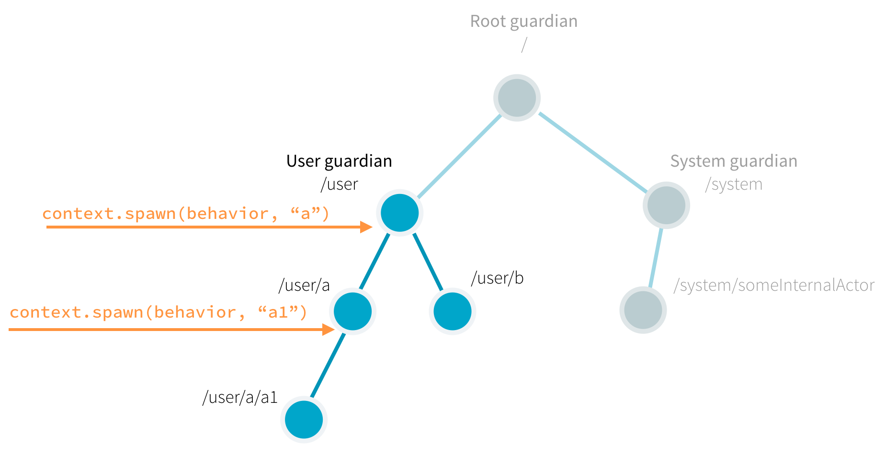

Part 1: Actor Architecture
Dependency
Add the following dependency in your project:
- sbt
val PekkoVersion = "2.6.20+81-523134c3+20230202-1514-SNAPSHOT" libraryDependencies += "org.apache.pekko" %% "pekko-actor-typed" % PekkoVersion- Maven
<properties> <scala.binary.version>2.13</scala.binary.version> </properties> <dependencyManagement> <dependencies> <dependency> <groupId>org.apache.pekko</groupId> <artifactId>pekko-bom_${scala.binary.version}</artifactId> <version>2.6.20+81-523134c3+20230202-1514-SNAPSHOT</version> <type>pom</type> <scope>import</scope> </dependency> </dependencies> </dependencyManagement> <dependencies> <dependency> <groupId>org.apache.pekko</groupId> <artifactId>pekko-actor-typed_${scala.binary.version}</artifactId> </dependency> </dependencies>- Gradle
def versions = [ ScalaBinary: "2.13" ] dependencies { implementation platform("org.apache.pekko:pekko-bom_${versions.ScalaBinary}:2.6.20+81-523134c3+20230202-1514-SNAPSHOT") implementation "org.apache.pekko:pekko-actor-typed_${versions.ScalaBinary}" }
Introduction
Use of Pekko relieves you from creating the infrastructure for an actor system and from writing the low-level code necessary to control basic behavior. To appreciate this, let’s look at the relationships between actors you create in your code and those that Pekko creates and manages for you internally, the actor lifecycle, and failure handling.
The Pekko actor hierarchy
An actor in Pekko always belongs to a parent. You create an actor by calling ActorContext.spawn()ActorContext.spawn(). The creator actor becomes the parent of the newly created child actor. You might ask then, who is the parent of the first actor you create?
As illustrated below, all actors have a common parent, the user guardian, which is defined and created when you start the ActorSystemActorSystem. As we covered in the Quickstart GuideQuickstart Guide, creation of an actor returns a reference that is a valid URL. So, for example, if we create an actor named someActor from the user guardian with context.spawn(someBehavior, "someActor"), its reference will include the path /user/someActor.

In fact, before your first actor is started, Pekko has already created two actors in the system. The names of these built-in actors contain guardian. The guardian actors include:
/the so-called root guardian. This is the parent of all actors in the system, and the last one to stop when the system itself is terminated./systemthe system guardian. Pekko or other libraries built on top of Pekko may create actors in the system namespace./userthe user guardian. This is the top level actor that you provide to start all other actors in your application.
The easiest way to see the actor hierarchy in action is to print ActorRefActorRef instances. In this small experiment, we create an actor, print its reference, create a child of this actor, and print the child’s reference.
In a new project, create a com.example package and with a a new Scala file called ActorHierarchyExperiments.scala here. Copy and paste the code from the snippet below to this new source filea Java file for each of the classes in the snippet below and copy the respective contents. Save your file and run sbt "runMain com.example.ActorHierarchyExperiments"files and run com.example.ActorHierarchyExperiments from your build tool or IDE to observe the output.
- Scala
-
source
package com.example import org.apache.pekko import pekko.actor.typed.ActorSystem import pekko.actor.typed.Behavior import pekko.actor.typed.scaladsl.AbstractBehavior import pekko.actor.typed.scaladsl.ActorContext import pekko.actor.typed.scaladsl.Behaviors object PrintMyActorRefActor { def apply(): Behavior[String] = Behaviors.setup(context => new PrintMyActorRefActor(context)) } class PrintMyActorRefActor(context: ActorContext[String]) extends AbstractBehavior[String](context) { override def onMessage(msg: String): Behavior[String] = msg match { case "printit" => val secondRef = context.spawn(Behaviors.empty[String], "second-actor") println(s"Second: $secondRef") this } } object Main { def apply(): Behavior[String] = Behaviors.setup(context => new Main(context)) } class Main(context: ActorContext[String]) extends AbstractBehavior[String](context) { override def onMessage(msg: String): Behavior[String] = msg match { case "start" => val firstRef = context.spawn(PrintMyActorRefActor(), "first-actor") println(s"First: $firstRef") firstRef ! "printit" this } } object ActorHierarchyExperiments extends App { val testSystem = ActorSystem(Main(), "testSystem") testSystem ! "start" } - Java
-
source
package com.example; import org.apache.pekko.actor.typed.ActorRef; import org.apache.pekko.actor.typed.ActorSystem; import org.apache.pekko.actor.typed.Behavior; import org.apache.pekko.actor.typed.javadsl.AbstractBehavior; import org.apache.pekko.actor.typed.javadsl.ActorContext; import org.apache.pekko.actor.typed.javadsl.Behaviors; import org.apache.pekko.actor.typed.javadsl.Receive; class PrintMyActorRefActor extends AbstractBehavior<String> { static Behavior<String> create() { return Behaviors.setup(PrintMyActorRefActor::new); } private PrintMyActorRefActor(ActorContext<String> context) { super(context); } @Override public Receive<String> createReceive() { return newReceiveBuilder().onMessageEquals("printit", this::printIt).build(); } private Behavior<String> printIt() { ActorRef<String> secondRef = getContext().spawn(Behaviors.empty(), "second-actor"); System.out.println("Second: " + secondRef); return this; } } class Main extends AbstractBehavior<String> { static Behavior<String> create() { return Behaviors.setup(Main::new); } private Main(ActorContext<String> context) { super(context); } @Override public Receive<String> createReceive() { return newReceiveBuilder().onMessageEquals("start", this::start).build(); } private Behavior<String> start() { ActorRef<String> firstRef = getContext().spawn(PrintMyActorRefActor.create(), "first-actor"); System.out.println("First: " + firstRef); firstRef.tell("printit"); return Behaviors.same(); } } public class ActorHierarchyExperiments { public static void main(String[] args) { ActorRef<String> testSystem = ActorSystem.create(Main.create(), "testSystem"); testSystem.tell("start"); } }
Note the way a message asked the first actor to do its work. We sent the message by using the parent’s reference: firstRef ! "printit"firstRef.tell("printit", ActorRef.noSender()). When the code executes, the output includes the references for the first actor and the child it created as part of the printit case. Your output should look similar to the following:
First: Actor[pekko://testSystem/user/first-actor#1053618476]
Second: Actor[pekko://testSystem/user/first-actor/second-actor#-1544706041]
Notice the structure of the references:
- Both paths start with
pekko://testSystem/. Since all actor references are valid URLs,pekko://is the value of the protocol field. - Next, just like on the World Wide Web, the URL identifies the system. In this example, the system is named
testSystem, but it could be any other name. If remote communication between multiple systems is enabled, this part of the URL includes the hostname so other systems can find it on the network. - Because the second actor’s reference includes the path
/first-actor/, it identifies it as a child of the first. - The last part of the actor reference,
#1053618476or#-1544706041is a unique identifier that you can ignore in most cases.
Now that you understand what the actor hierarchy looks like, you might be wondering: Why do we need this hierarchy? What is it used for?
An important role of the hierarchy is to safely manage actor lifecycles. Let’s consider this next and see how that knowledge can help us write better code.
The actor lifecycle
Actors pop into existence when created, then later, at user requests, they are stopped. Whenever an actor is stopped, all of its children are recursively stopped too. This behavior greatly simplifies resource cleanup and helps avoid resource leaks such as those caused by open sockets and files. In fact, a commonly overlooked difficulty when dealing with low-level multi-threaded code is the lifecycle management of various concurrent resources.
To stop an actor, the recommended pattern is to return Behaviors.stoppedBehaviors.stopped inside the actor to stop itself, usually as a response to some user defined stop message or when the actor is done with its job. Stopping a child actor is technically possible by calling context.stop(childRef)context.stop(childRef) from the parent, but it’s not possible to stop arbitrary (non-child) actors this way.
The Pekko actor API exposes some lifecycle signals, for example PostStopPostStop is sent just after the actor has been stopped. No messages are processed after this point.
Let’s use the PostStop lifecycle signal in a simple experiment to observe the behavior when we stop an actor. First, add the following 2 actor classes to your project:
- Scala
-
source
object StartStopActor1 { def apply(): Behavior[String] = Behaviors.setup(context => new StartStopActor1(context)) } class StartStopActor1(context: ActorContext[String]) extends AbstractBehavior[String](context) { println("first started") context.spawn(StartStopActor2(), "second") override def onMessage(msg: String): Behavior[String] = msg match { case "stop" => Behaviors.stopped } override def onSignal: PartialFunction[Signal, Behavior[String]] = { case PostStop => println("first stopped") this } } object StartStopActor2 { def apply(): Behavior[String] = Behaviors.setup(new StartStopActor2(_)) } class StartStopActor2(context: ActorContext[String]) extends AbstractBehavior[String](context) { println("second started") override def onMessage(msg: String): Behavior[String] = { // no messages handled by this actor Behaviors.unhandled } override def onSignal: PartialFunction[Signal, Behavior[String]] = { case PostStop => println("second stopped") this } } - Java
-
source
class StartStopActor1 extends AbstractBehavior<String> { static Behavior<String> create() { return Behaviors.setup(StartStopActor1::new); } private StartStopActor1(ActorContext<String> context) { super(context); System.out.println("first started"); context.spawn(StartStopActor2.create(), "second"); } @Override public Receive<String> createReceive() { return newReceiveBuilder() .onMessageEquals("stop", Behaviors::stopped) .onSignal(PostStop.class, signal -> onPostStop()) .build(); } private Behavior<String> onPostStop() { System.out.println("first stopped"); return this; } } class StartStopActor2 extends AbstractBehavior<String> { static Behavior<String> create() { return Behaviors.setup(StartStopActor2::new); } private StartStopActor2(ActorContext<String> context) { super(context); System.out.println("second started"); } @Override public Receive<String> createReceive() { return newReceiveBuilder().onSignal(PostStop.class, signal -> onPostStop()).build(); } private Behavior<String> onPostStop() { System.out.println("second stopped"); return this; } }
And create a ‘main’ class like above to start the actors and then send them a "stop" message:
- Scala
-
source
val first = context.spawn(StartStopActor1(), "first") first ! "stop" - Java
-
source
ActorRef<String> first = context.spawn(StartStopActor1.create(), "first"); first.tell("stop");
You can again use sbt to start this program. The output should look like this:
first started
second started
second stopped
first stopped
When we stopped actor first, it stopped its child actor, second, before stopping itself. This ordering is strict, all PostStopPostStop signals of the children are processed before the PostStop signal of the parent is processed.
Failure handling
Parents and children are connected throughout their lifecycles. Whenever an actor fails (throws an exception or an unhandled exception bubbles out from onMessageReceive) the failure information is propagated to the supervision strategy, which then decides how to handle the exception caused by the actor. The supervision strategy is typically defined by the parent actor when it spawns a child actor. In this way, parents act as supervisors for their children. The default supervisor strategy is to stop the child. If you don’t define the strategy all failures result in a stop.
Let’s observe a restart supervision strategy in a simple experiment. Add the following classes to your project, just as you did with the previous ones:
- Scala
-
source
object SupervisingActor { def apply(): Behavior[String] = Behaviors.setup(context => new SupervisingActor(context)) } class SupervisingActor(context: ActorContext[String]) extends AbstractBehavior[String](context) { private val child = context.spawn( Behaviors.supervise(SupervisedActor()).onFailure(SupervisorStrategy.restart), name = "supervised-actor") override def onMessage(msg: String): Behavior[String] = msg match { case "failChild" => child ! "fail" this } } object SupervisedActor { def apply(): Behavior[String] = Behaviors.setup(context => new SupervisedActor(context)) } class SupervisedActor(context: ActorContext[String]) extends AbstractBehavior[String](context) { println("supervised actor started") override def onMessage(msg: String): Behavior[String] = msg match { case "fail" => println("supervised actor fails now") throw new Exception("I failed!") } override def onSignal: PartialFunction[Signal, Behavior[String]] = { case PreRestart => println("supervised actor will be restarted") this case PostStop => println("supervised actor stopped") this } } - Java
-
source
class SupervisingActor extends AbstractBehavior<String> { static Behavior<String> create() { return Behaviors.setup(SupervisingActor::new); } private final ActorRef<String> child; private SupervisingActor(ActorContext<String> context) { super(context); child = context.spawn( Behaviors.supervise(SupervisedActor.create()).onFailure(SupervisorStrategy.restart()), "supervised-actor"); } @Override public Receive<String> createReceive() { return newReceiveBuilder().onMessageEquals("failChild", this::onFailChild).build(); } private Behavior<String> onFailChild() { child.tell("fail"); return this; } } class SupervisedActor extends AbstractBehavior<String> { static Behavior<String> create() { return Behaviors.setup(SupervisedActor::new); } private SupervisedActor(ActorContext<String> context) { super(context); System.out.println("supervised actor started"); } @Override public Receive<String> createReceive() { return newReceiveBuilder() .onMessageEquals("fail", this::fail) .onSignal(PreRestart.class, signal -> preRestart()) .onSignal(PostStop.class, signal -> postStop()) .build(); } private Behavior<String> fail() { System.out.println("supervised actor fails now"); throw new RuntimeException("I failed!"); } private Behavior<String> preRestart() { System.out.println("supervised will be restarted"); return this; } private Behavior<String> postStop() { System.out.println("supervised stopped"); return this; } }
And run with:
- Scala
-
source
val supervisingActor = context.spawn(SupervisingActor(), "supervising-actor") supervisingActor ! "failChild" - Java
-
source
ActorRef<String> supervisingActor = context.spawn(SupervisingActor.create(), "supervising-actor"); supervisingActor.tell("failChild");
You should see output similar to the following:
supervised actor started
supervised actor fails now
supervised actor will be restarted
supervised actor started
[ERROR] [11/12/2018 12:03:27.171] [ActorHierarchyExperiments-pekko.actor.default-dispatcher-2] [pekko://ActorHierarchyExperiments/user/supervising-actor/supervised-actor] Supervisor pekko.actor.typed.internal.RestartSupervisor@1c452254 saw failure: I failed!
java.lang.Exception: I failed!
at typed.tutorial_1.SupervisedActor.onMessage(ActorHierarchyExperiments.scala:113)
at typed.tutorial_1.SupervisedActor.onMessage(ActorHierarchyExperiments.scala:106)
at org.apache.pekko.actor.typed.scaladsl.AbstractBehavior.receive(AbstractBehavior.scala:59)
at org.apache.pekko.actor.typed.Behavior$.interpret(Behavior.scala:395)
at org.apache.pekko.actor.typed.Behavior$.interpretMessage(Behavior.scala:369)
at org.apache.pekko.actor.typed.internal.InterceptorImpl$$anon$2.apply(InterceptorImpl.scala:49)
at org.apache.pekko.actor.typed.internal.SimpleSupervisor.aroundReceive(Supervision.scala:85)
at org.apache.pekko.actor.typed.internal.InterceptorImpl.receive(InterceptorImpl.scala:70)
at org.apache.pekko.actor.typed.Behavior$.interpret(Behavior.scala:395)
at org.apache.pekko.actor.typed.Behavior$.interpretMessage(Behavior.scala:369)
We see that after failure the supervised actor is stopped and immediately restarted. We also see a log entry reporting the exception that was handled, in this case, our test exception. In this example we also used the PreRestartPreRestart signal which is processed before restarts.
For the impatient, we also recommend looking into the fault tolerance reference page for more in-depth details.
Summary
We’ve learned about how Pekko manages actors in hierarchies where parents supervise their children and handle exceptions. We saw how to create a very simple actor and child. Next, we’ll apply this knowledge to our example use case by modeling the communication necessary to get information from device actors. Later, we’ll deal with how to manage the actors in groups.